Configuración de túnel VPN con IPSec en routers Cisco
Datos Generales
Institución: Universidad Politécnica de San Luis Potosí Materia: CNO V – Seguridad Informática Estudiante: López Castro Diego – 182032 Profesor: Mtro. Servando López Contreras Fecha de entrega: 16 – Febrero – 2026
Introducción
Actualmente, muchas organizaciones requieren conectar redes remotas de forma segura a través de Internet,
evitando que la información sea interceptada o modificada. En esta actividad se implementó una VPN IPSec tipo Tunnel,
configurando routers Cisco para establecer un canal cifrado entre dos redes privadas. A través de distintas fases, se aplicaron políticas ISAKMP,
transform-set, ACLs y crypto maps, logrando una comunicación protegida que garantiza confidencialidad, integridad y autenticación en el intercambio de datos.
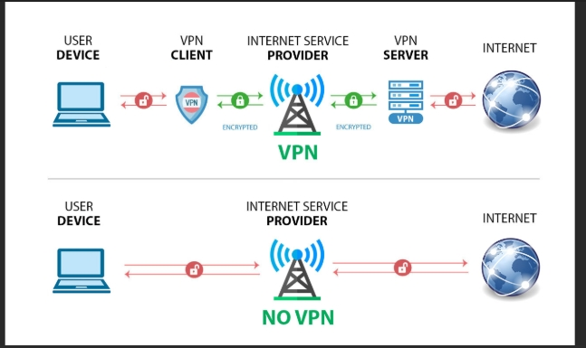
Figura 1. VPN
Configuración de la topología de red
En esta actividad se implementó una VPN IPSec tipo Tunnel para asegurar la comunicación
entre dos redes privadas, conectadas a través de un ISP. Se siguieron diferentes fases
de configuración para asegurar conectividad, habilitar criptografía y establecer el túnel.
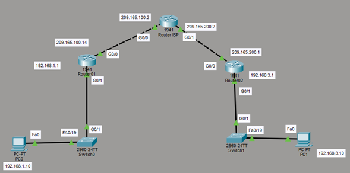
Figura 2. Topología de red
Fases de configuración
1. Configuración inicial
En la fase de configuración inicial se realiza la preparación básica de cada router.
Primero se utiliza el comando enable (o en) para entrar al modo EXEC privilegiado,
lo cual permite ejecutar comandos administrativos. Después se utiliza configure
terminal para ingresar al modo de configuración global. Se asigna un nombre a cada
router con el comando hostname, lo que facilita su identificación dentro de la red.
Así mismo, se configuran las interfaces de red. Con el comando interface
GigabitEthernet se accede a la configuración de cada interfaz física. Se asigna una
dirección IP y una máscara de subred mediante el comando ip address, lo cual
permite que el dispositivo pueda comunicarse dentro de su segmento de red. El
comando no shut se utiliza para activar la interfaz, ya que por defecto estas se
encuentran deshabilitadas administrativamente. Además, se configura una ruta
estática por defecto utilizando el comando ip route 0.0.0.0 0.0.0.0, lo que permite
que todo el tráfico destinado a redes desconocidas sea enviado hacia el siguiente
salto correspondiente. Esto es fundamental para que los routers puedan
comunicarse a través del ISP.
Router 01
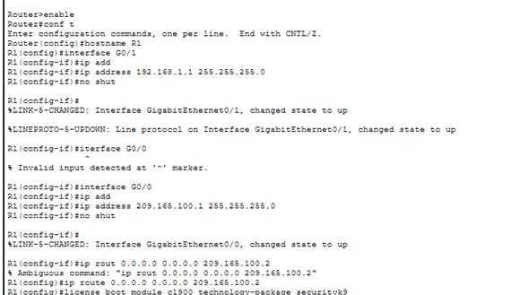
Figura 3. Configuración incial del Router 01
Router 02
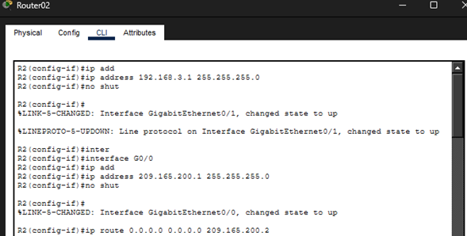
Figura 4. Configuración incial del Router 02
Router ISP
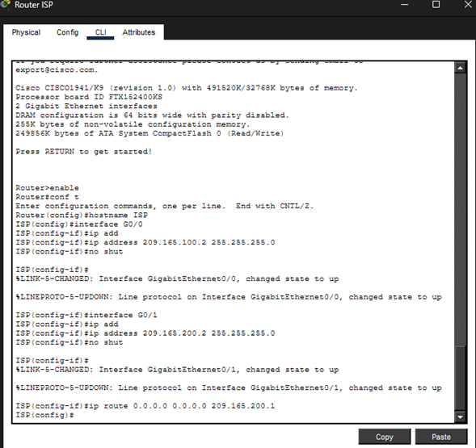
Figura 5. Configuración incial del Router 02
2. Licencia de seguridad habilitada
En esta fase, básicamente, se habilita la licencia de seguridad. Para que el router
pueda ejecutar funciones criptográficas como IPSec, es necesario activar el paquete
tecnológico SecurityK9. Esto se realiza mediante el comando license boot
technology-package securityK9. Después se guarda la configuración con copy
running-config startup-config y se reinicia el dispositivo con reload para aplicar los
cambios. Finalmente, el comando show version permite verificar que la licencia de
seguridad está activa. Sin esta licencia, los comandos relacionados con crypto no
estarían disponibles, por lo que la implementación de la VPN no sería posible.
Router 01
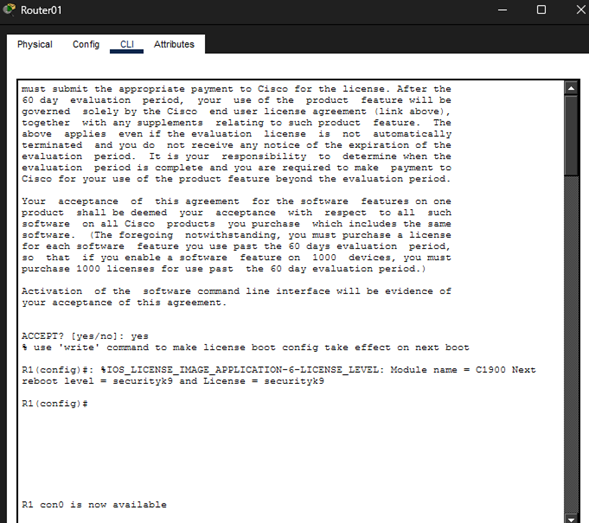
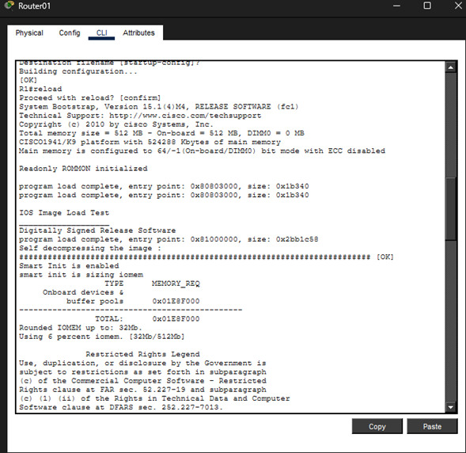
Figura 6. Licencia de seguridad del Router 01
Router 02
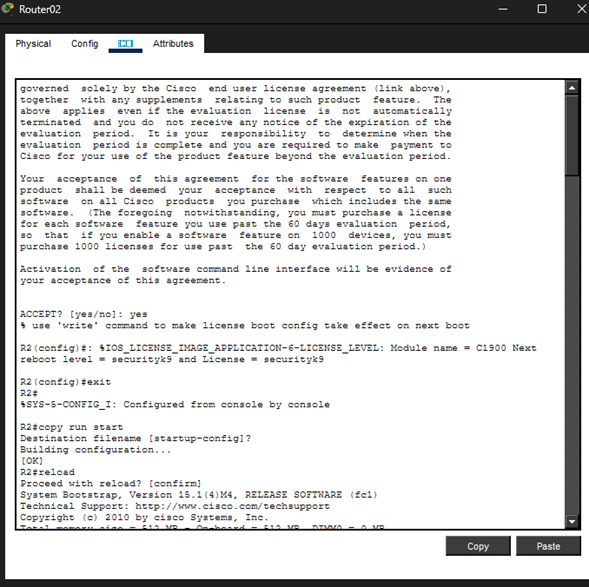
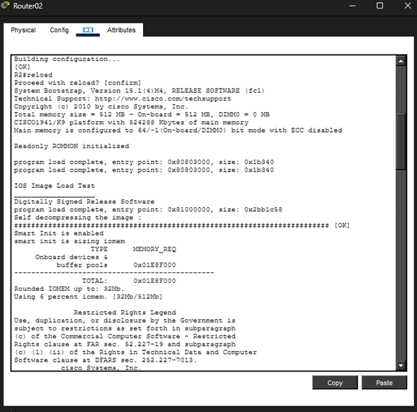
Figura 7. Licencia de seguridad del Router 02
Router ISP
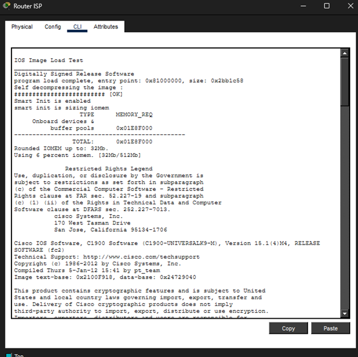
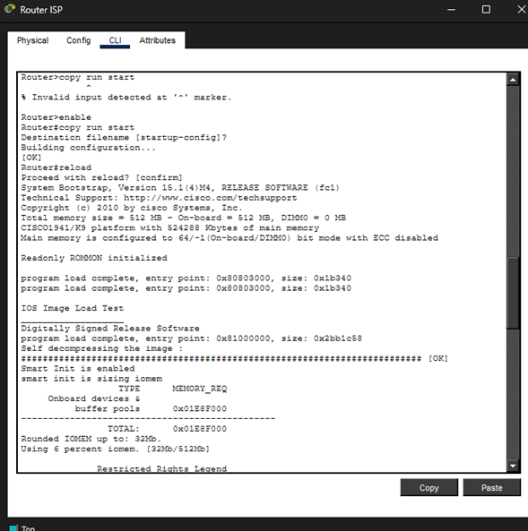
Figura 8. Licencia de seguridad del Router ISP
3. Implementación de ACLs
En la fase de implementación de ACL’s se crean Listas de Control de Acceso
extendidas. Una ACL es un conjunto de reglas que permiten o deniegan tráfico
según criterios específicos como direcciones IP. En este caso se configura la ACL
100 en cada router. Esta ACL permite tráfico IP entre las redes privadas 192.168.1.0
y 192.168.3.0 utilizando una wildcard mask 0.0.0.255. La wildcard mask indica qué
bits pueden variar dentro de la red, representando una red con máscara /24. Estas
ACL no se utilizan para bloquear tráfico, sino para definir el tráfico interesante que
será protegido por IPSec. Solo los paquetes que coincidan con esta ACL serán
cifrados dentro del túnel VPN.
Router 01
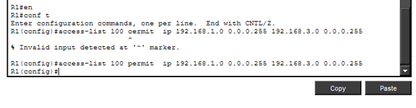
Figura 9. Implementación de ACLs del Router 01
Router 02
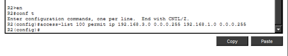
Figura 10. Implementación de ACLs del Router 02
4. Phase 1 ISAKMP Policy
En la Phase 01 se configura la política ISAKMP. ISAKMP es el protocolo encargado
de negociar y establecer los parámetros de seguridad entre los peers antes de que
se cifren los datos. Se crea una política con crypto isakmp policy indicando un
número de prioridad. Dentro de esta política se especifica el algoritmo de cifrado
mediante encryption aes 256, lo que indica que se utilizará AES con clave de 256
bits. Se define el método de autenticación con authentication pre-share, lo que
significa que ambos routers utilizarán una clave precompartida para autenticarse
mutuamente. También se configura el grupo 5 de Diffie-Hellman con group 5, el cual
se encarga del intercambio seguro de claves. Finalmente, con crypto isakmp key se
establece la clave precompartida asociada a la dirección IP del peer remoto. Esta
fase crea la Security Association inicial que protege la negociación del túnel.
Router 01
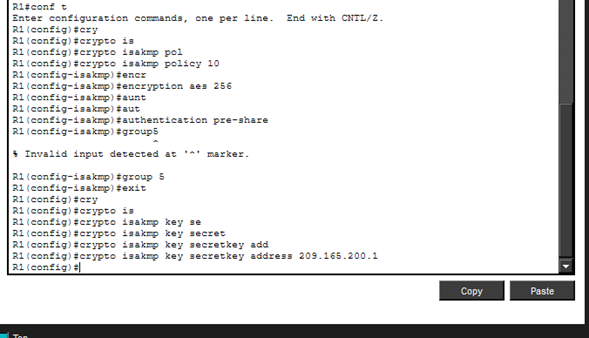
Figura 11. Phase 1 ISAKMP Policy con el Router 01
Router 02
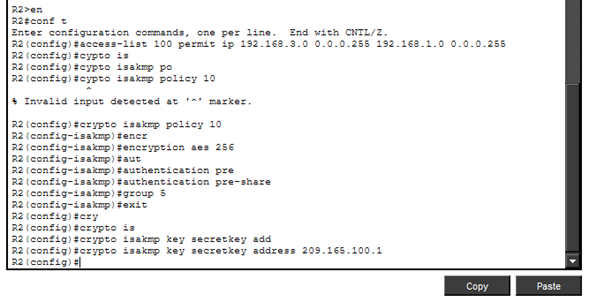
Figura 12. Phase 1 ISAKMP Policy con el Router 02
5. Phase 2 ipsec transform set
En la Phase 2 se configura el IPSec transform-set. Esta fase define cómo se
protegerán los datos reales que viajan por el túnel. El comando crypto ipsec
transform-set crea un conjunto de transformaciones criptográficas. Se utiliza espaes 256, lo que indica que se emplea el protocolo Encapsulating Security Payload
con cifrado AES de 256 bits. También se configura esp-sha-hmac, que proporciona
autenticación e integridad de los datos mediante el algoritmo SHA con HMAC. A
diferencia de la Phase 01, en esta etapa se cifra tanto el encabezado como el
contenido del paquete. Aquí se establece la Security Association de IPSec que
protegerá el tráfico definido previamente por la ACL.
Router 01
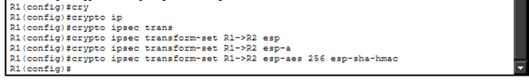
Figura 13. Phase 2 ipsec transform set con el Router 01
Router 02
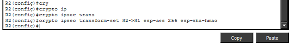
Figura 14. Phase 2 ipsec transform set con el Router 01
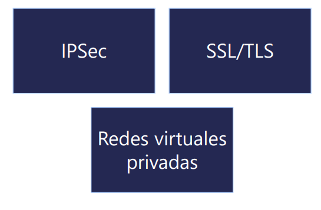
Figura 15. Protocolo de conexión segura
6. Crear el mapa criptográfico
En la creación del mapa criptográfico, se crea el mapa con el comando crypto map.
El crypto map funciona como un contenedor que integra todos los elementos
configurados anteriormente. Dentro del crypto map se define el peer remoto con set
peer, se activa Perfect Forward Secrecy mediante set pfs group5, lo cual obliga a
generar nuevas claves de sesión usando Diffie-Hellman para cada negociación, y
se establece el tiempo de vida de la Security Association con set securityassociation lifetime seconds 86400, indicando que la asociación será válida por 24
horas. También se asocia el transform-set con set transform-set y se vincula la ACL
mediante match address 100, especificando que el tráfico interesante será el
definido en esa lista de acceso.
Router 01
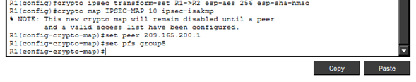
Figura 16. Creación del mapa criptográfico del Router 01
Router 02
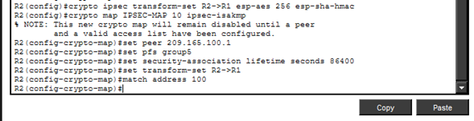
Figura 17. Creación del mapa criptográfico del Router 02
7. Aplicar el mapa criptográfico
En esta última fase, se aplica el mapa criptográfico a la interfaz que conecta hacia
la red pública. Con el comando interface GigabitEthernet se accede a la interfaz
externa y se aplica crypto map IPSEC-MAP. Esto activa la funcionalidad de IPSec
en esa interfaz. A partir de ese momento, todo el tráfico que pase por dicha interfaz
será evaluado según el crypto map, y si coincide con la ACL configurada, será
cifrado automáticamente.
Router 01
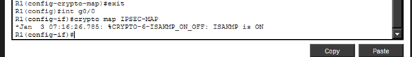
Figura 18. Aplicar el mapa criptográfico para el Router 01
Router 02
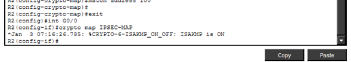
Figura 19. Aplicar el mapa criptográfico para el Router 02
Resultado final
Una vez completada la configuración, se logró establecer el túnel IPSec entre ambas redes privadas,
permitiendo tráfico seguro y cifrado a través del ISP.
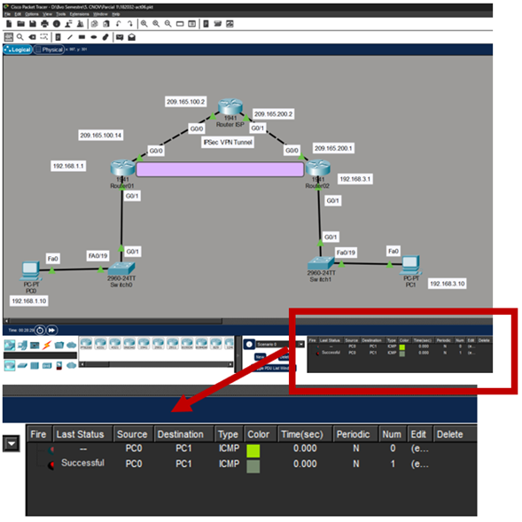
Figura 20. Implementación IPSec VPN
Conclusión
En resumen, aplicar la VPN IPSec Tunnel en la topología propuesta, la seguridad
en una red de tráfico de información necesita de una configuración ordenada y
coherente en cada etapa. Primero se estableció el direccionamiento IP y las rutas
estáticas para asegurar la conectividad básica. Después se habilitó la licencia
SecurityK9 para activar las funciones criptográficas necesarias. Las ACL definieron
el tráfico interesante que sería protegido, evitando cifrar información innecesaria.
En la Phase 01, la política ISAKMP permitió negociar los parámetros de seguridad
como el cifrado AES 256, la autenticación pre-share y el grupo Diffie-Hellman 5,
creando la Security Association inicial. En la Phase 2, el transform-set con ESP, AES
256 y SHA-HMAC garantizó la confidencialidad e integridad de los datos. El crypto
map integró todos estos elementos y, al aplicarlo en la interfaz externa, se activó el
túnel seguro.
Todo lo realizado con anterioridad puede ser usado, si no es que muchas empresas
ya lo aplican, por compañías, organizaciones que conectan departamentos de forma
remota o cualquier entorno que necesite proteger información a través de Internet.
Al seguir correctamente cada paso y mantener coherencia en ambos routers, se
logró establecer una conexión segura y funcional entre las dos redes privadas,
asegurando autenticación, integridad y confidencialidad en la comunicación.
Video
Cómo configurar VPN IPsec Site-to-Site en Packet Tracer | Guía Paso a Paso